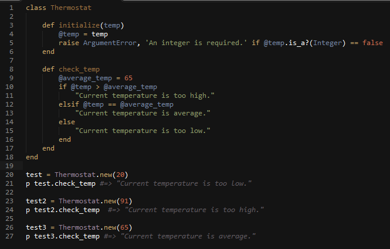

"Classes" hardcarry your Ruby code instances, methods, and Harry Potter? date posted 04/17/2015 20:00
What do you think of when you first hear the word, class? Probably a classroom or a social class. In Ruby, a class is a manual for how an object will work. Let's say you're trying to figure out how to change the temperature in your house, a manual for the thermostat can guide you through it. For ruby, the manual guides the object.
So let's try this out step-by-step. Let's make a class called Thermostat that takes an integer as a parameter. This integer will represent the current temperature in the house.

Alright, Jeng, why are you throwing all this code at me? Hold on, bear with me here. Notice the line numbers on the left? I'll be explaining using those lines.
Line[1-18] This is the entire class, called Thermostat. This is our manual
for checking how our temperature is. Ignore everything below Line 18 until later.
Line[3-6] So there are a couple things going on here. First, let's talk about
all these defs. These are our methods, our chapters in a manual.
Each method guides the object through the "how-to's" of being part of this class, this
'clique' of objects.
But most importantly, what are the requirements to even BE part of this class?
That's where the initialize comes in. According to this initialize method,
you need a parameter that's an integer. Okay, so Jennifer, what are all these
@ signs for? These are instance variables. They are the tools you're going
to use within this class. But sometimes you need to use the same tools in different
methods. Defining them as @instance variables allows you to do this.
The last part of this method has an ArgumentError. You know how in
Harry Potter, you needed to know the dormitory password to get into any of the
houses? This message will pop up if you don't have the correct input to become
part of this class and until you bring this method the correct input (an integer), it
will not let you in. (Just like the Fat Lady or Sir Cadagon portrait in Harry Potter, poor Neville, never
had the right password).
Line[8-17] So now you've made your way into the class! Congratulations! Let's teach
you how to act like a thermostat. According to our lovely friend, the Internet, most of the
research points to 65F as an average household temperature. So let's set our
instance variable, average_temp to 65. But what if I came into this class not knowing
what the average temperature was? What if I came in too hot? Too cold?
As a member of the honorary Thermostat class, you get to learn how to check
which side of the spectrum your temperature's at. I've decided to use if/else
statements in this. If you're too high, too low, or just right, it will spit
out a String (a Ruby class you will see all the time) letting you know
how you're temperature is.
Line[20-27] is testing out our class, adding new members, and making sure
all the code works within the class Thermostat.
There's a huge amount you could add to this code. You could specify a way to change the thermostat, when it should turn off, etc. But for this blog's purposes, we'll keep it short and sweet.